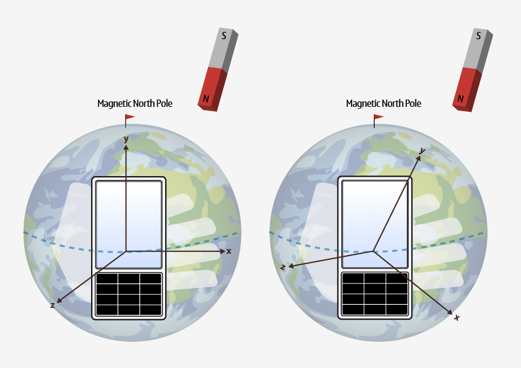

QMagnetometerReading Class Reference
The QMagnetometerReading class represents one reading from the magnetometer. More...
#include <QMagnetometerReading>
Inherits QSensorReading.
This class was introduced in Qt Mobility 1.0.
Properties
- calibrationLevel : const qreal
- x : const qreal
- y : const qreal
- z : const qreal
- 1 property inherited from QSensorReading
- 1 property inherited from QObject
Public Functions
| qreal | calibrationLevel () const |
| void | setCalibrationLevel ( qreal calibrationLevel ) |
| void | setX ( qreal x ) |
| void | setY ( qreal y ) |
| void | setZ ( qreal z ) |
| qreal | x () const |
| qreal | y () const |
| qreal | z () const |
- 4 public functions inherited from QSensorReading
- 29 public functions inherited from QObject
Additional Inherited Members
- 1 public slot inherited from QObject
- 1 signal inherited from QObject
- 1 public variable inherited from QObject
- 4 static public members inherited from QObject
- 7 protected functions inherited from QObject
- 2 protected variables inherited from QObject
Detailed Description
The QMagnetometerReading class represents one reading from the magnetometer.
QMagnetometerReading Units
The magnetometer returns magnetic flux density values along 3 axes. The scale of the values is teslas. The axes are arranged as follows.

The magnetometer can report on either raw magnetic flux values or geomagnetic flux values. By default it returns raw magnetic flux values. The QMagnetometer::returnGeoValues property must be set to return geomagnetic flux values.
The primary difference between raw and geomagnetic values is that extra processing is done to eliminate local magnetic interference from the geomagnetic values so they represent only the effect of the Earth's magnetic field. This process is not perfect and the accuracy of each reading may change.
The image below shows the difference between geomagnetic (on the left) and raw (on the right) readings for a phone that is being subjected to magnetic interference.

The accuracy of each reading is measured as a number from 0 to 1. A value of 1 is the highest level that the device can support and 0 is the worst.
See also CS001671 - Calibrating the magnetometer sensor.
Property Documentation
calibrationLevel : const qreal
This property holds the accuracy of the reading.
Measured as a value from 0 to 1 with higher values being better.
Note that this only changes when measuring geomagnetic flux density. Raw magnetic flux readings will always have a value of 1.
Access functions:
| qreal | calibrationLevel () const |
See also QMagnetometerReading Units and CS001671 - Calibrating the magnetometer sensor.
x : const qreal
This property holds the raw magnetic flux density on the X axis.
Measured as telsas.
Access functions:
| qreal | x () const |
See also QMagnetometerReading Units.
y : const qreal
This property holds the raw magnetic flux density on the Y axis.
Measured as telsas.
Access functions:
| qreal | y () const |
See also QMagnetometerReading Units.
z : const qreal
This property holds the raw magnetic flux density on the Z axis.
Measured as telsas.
Access functions:
| qreal | z () const |
See also QMagnetometerReading Units.
Member Function Documentation
void QMagnetometerReading::setCalibrationLevel ( qreal calibrationLevel )
Sets the accuracy of the reading to calibrationLevel.
See also calibrationLevel().
void QMagnetometerReading::setX ( qreal x )
Sets the raw magnetic flux density on the X axis to x.
See also x().
void QMagnetometerReading::setY ( qreal y )
Sets the raw magnetic flux density on the Y axis to y.
See also y().
void QMagnetometerReading::setZ ( qreal z )
Sets the raw magnetic flux density on the Z axis to z.
See also z().